MSc Applied Sport Performance Analysis graduate (Distinction) from Leeds Beckett University. Turning match data into decisions - across football, tennis and rugby.
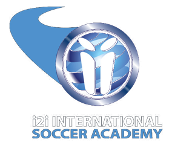
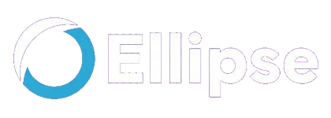
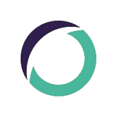
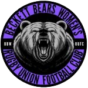
I'm a performance analyst and sport scientist who has just completed an MSc in Applied Sport Performance Analysis at Leeds Beckett University with Distinction, building on a First Class BSc in Sport and Exercise Science.
My work sits at the intersection of tactical analysis, data analysis and applied sport science - from coding live ATP tennis matches for broadcast delivery, to building player development frameworks for academy footballers, to conducting applied research on concussion exposure in rugby.
My MSc dissertation analyses corner kick and throw-in outcomes across all 64 matches of the 2022 FIFA World Cup using StatsBomb open data and R, identifying tactical predictors of set-piece success.
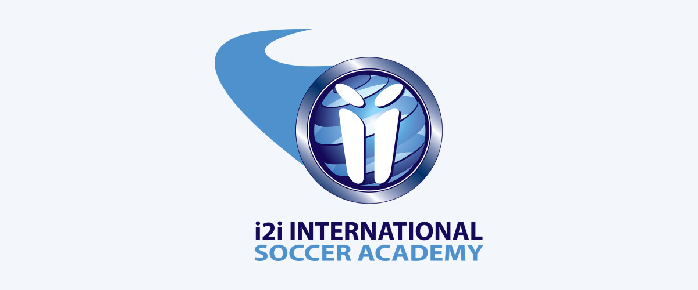
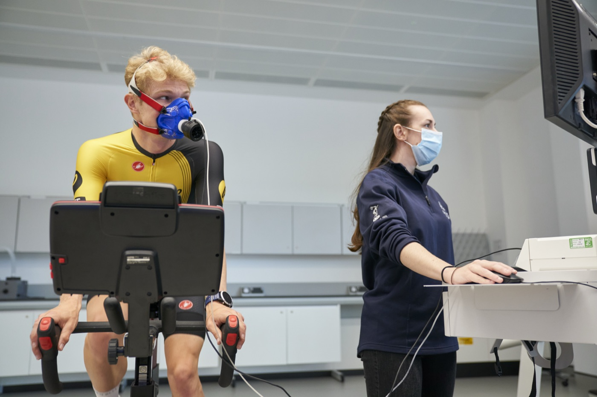
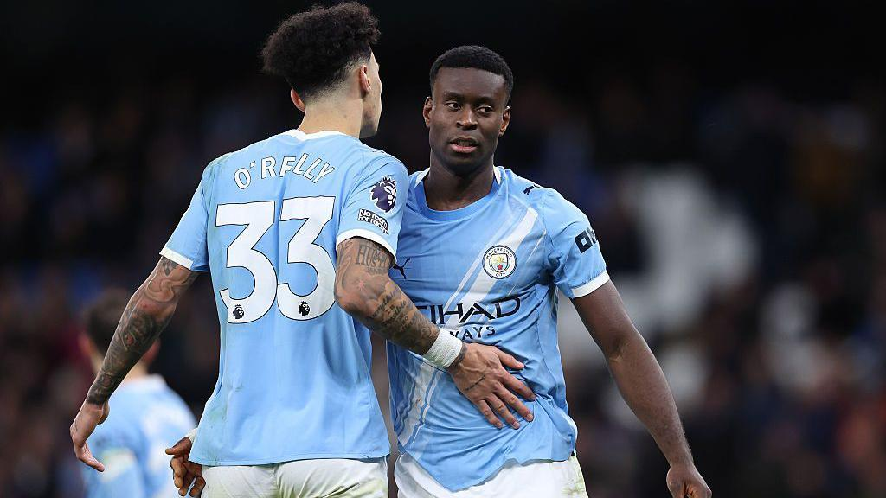
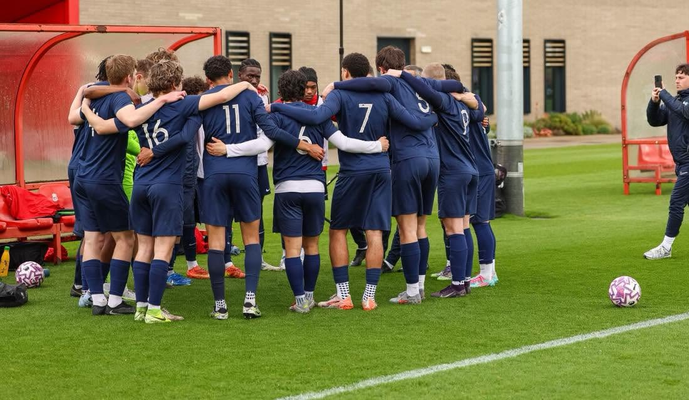
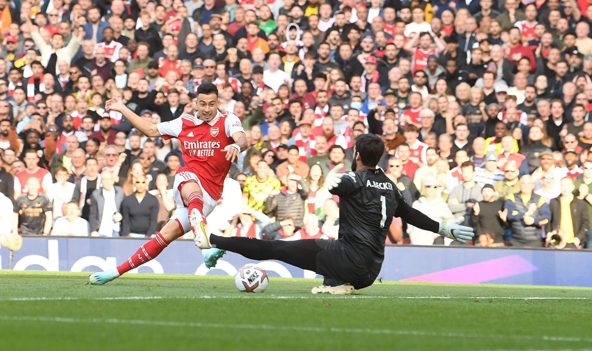
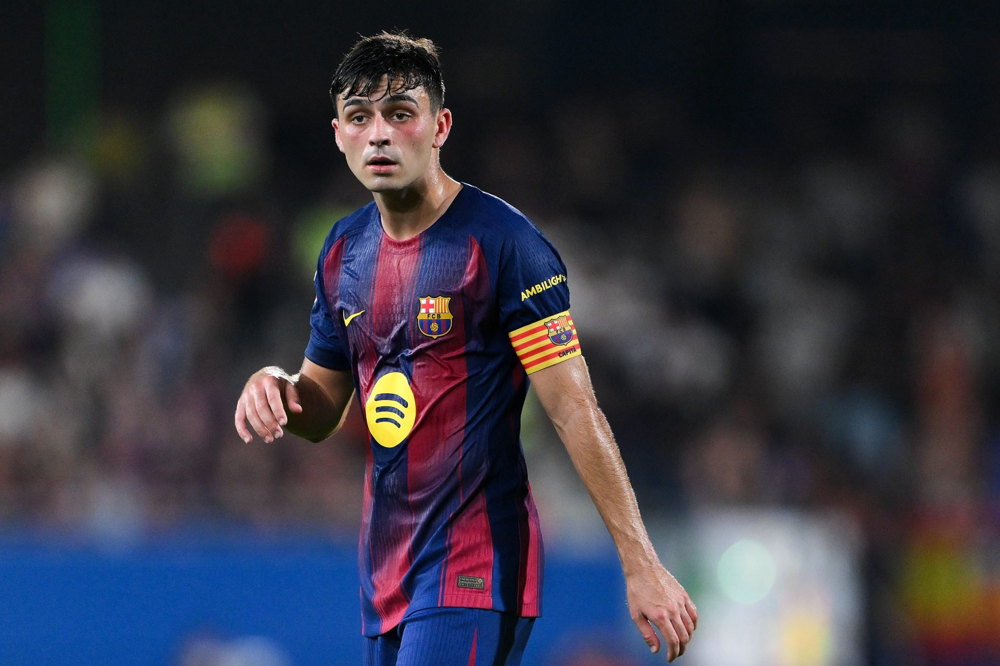
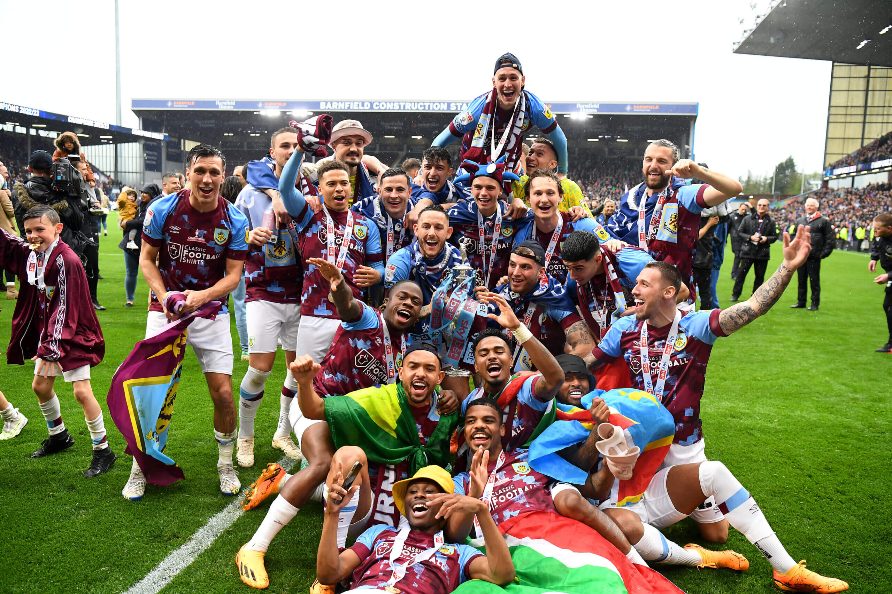
Based in Leeds. Available for performance analyst and sport science roles - particularly academy and first team environments. Always open to a conversation about data, football and analysis.